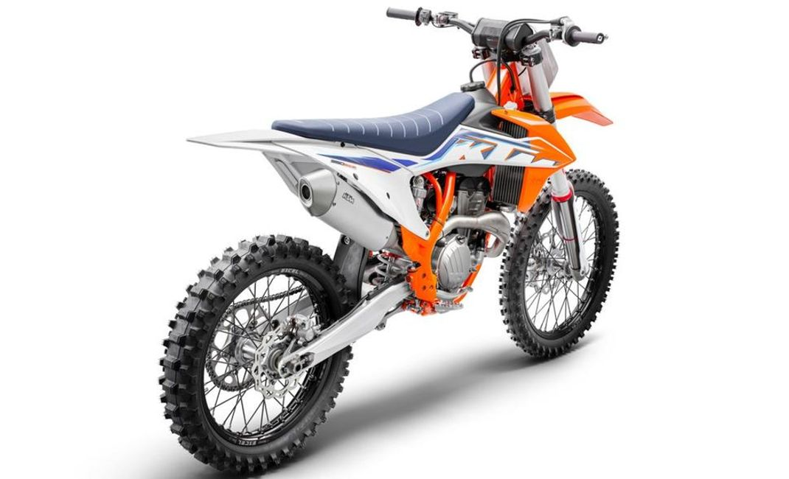
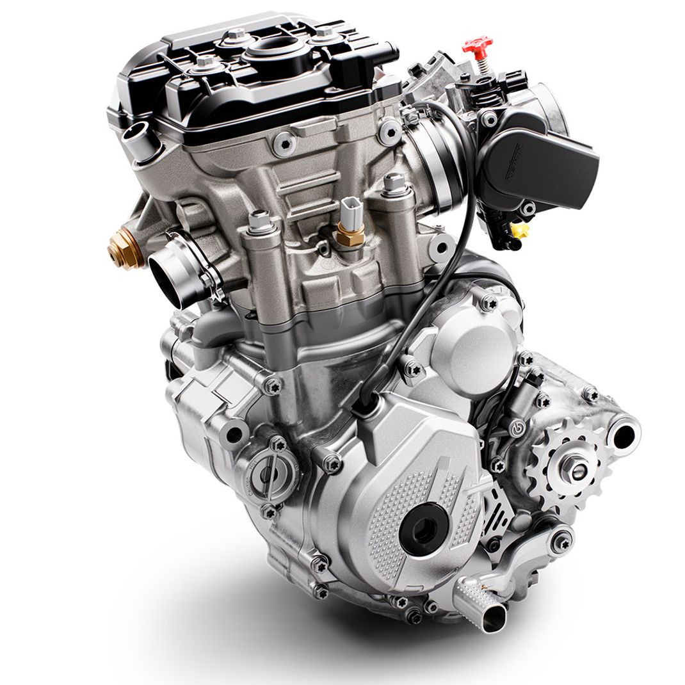
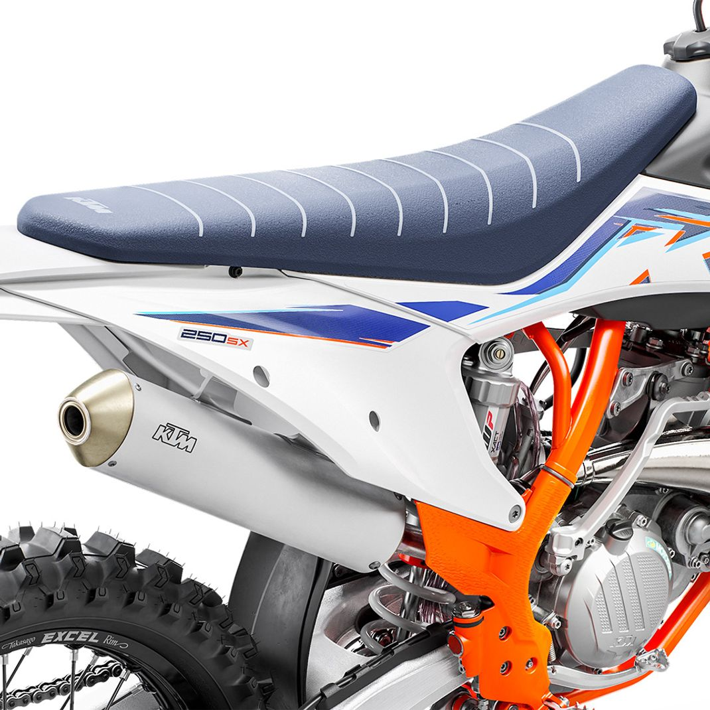
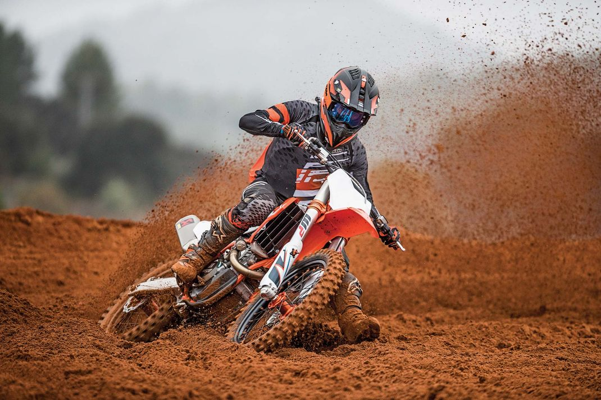

Втім, чимось австрійський виробник нас все ж таки порадував – зокрема, анонсованою влітку оновленою моделлю KTM 250 SX-F, презентація якої пройшла без особливого ажіотажу. За великим рахунком, це цілком закономірно, адже з технічного погляду новинка мало чим відрізняється від попередньої моделі. Інженери вирішили низку раніше виявлених проблем та недоліків, а дизайнери внесли кілька нових «косметичних правок» у зовнішність мотоцикла. Про все це і поговоримо, почавши, як завжди, з короткого огляду моделей двох попередніх років.
Хода по світу злощасного вірусу внесла суттєві корективи у звичайний перебіг життя, не обійшовши і мотоциклетну промисловість. І хоча робота заводу КТМ вже відновилася, на звичну кількість нових моделей наступного року можна не розраховувати навіть попри підвищений попит в особі шанувальників бренду.
Модель зразка 2020
Оновлення мотоцикла KTM 250SX-F версії 2020 були хоч і не дуже численними, але досить істотними. Зокрема, вони торкнулися:
- Передній 48-мм пневматичні вилки від польського виробника WP XACT – її оснастили новими поршнями. Така вилка демонструє швидше спрацювання на відбій і робить їзду більш плавною. До речі, аналогічну новацію ми виявили і в Husqvarna FC250 того ж модельного року.
- Ковпачки вилки – їхня оновлена версія помітно спростила процес виходу повітря.
- Заднього амортизатора WP XACT – його переналаштували, обладнавши досконалішим регулятором стиснення, що зробило їзду по нерівностях помітно комфортнішим.
- Коробка повітряного фільтра. Як ви, можливо, пам'ятаєте, в моделі 2019 року розробникам KTM чомусь заманулося помітно зменшити короб, що буквально «задушило» двигун. У результаті він став огидно реагувати на газ і суттєво втратив у вихідній потужності, що було особливо відчутно на низах та в середньому діапазоні. У наступному модельному році це прикре непорозуміння все ще було, проте хоча б опціонально стала доступною перфорована кришка з отворами, яка дозволяла засмоктувати набагато більшу кількість повітря. Що ж, і тому дякую!
- Графічного оформлення. Це обговорювати не станемо.
Продати мотоцикл 2020 року можна в розділі продажу мото нашого сайту.
Модель 2021
Як і минулого року, в 2021-му розробники 250SXF зробили найбільший наголос на вдосконалення підвіски. Насамперед увага приділялася доопрацюванню окремих компонентів задньої підвіски та пневматичної вилки WP XACT. Зазначимо, що японські виробники-конкуренти Showa і Kayaba відмовилися від повітряних виделок аналогічної конструкції, а ось польські інженери WP виявили більшу завзятість і таки досягли цілком гідних результатів. Їхня нова модель має меншу кількість деталей, обладнана відмінним механізмом плавного регулювання жорсткості та дозволяє знизити загальну вагу мотоцикла на 1,3 кілограма. Крім того, у новій вилці було реалізовано такі нововведення:
- Впроваджено пази, призначені для перепуску олії. Їх наявність дозволяє знизити рівень пікового тиску олії, що виникає під час максимального зближення втулок стійки та картриджа.
- Виделку обладнали негативною камерою. Під час стиснення вилки у верхній зоні внутрішньої порожнини створюється надто високий тиск, що провокує надто швидкий відскок вилки. Наявність негативної повітряної камери дозволяє утримувати тиск повітря, який потрібний контролю сили відбою. Рішення полягало в установці по центру такту стиснення перехресної дренажної щілини, що дозволяє повітря, що нагнітається, частково йти в бік відбою.
- Поліпшився повітряний ущільнювач. Оскільки завдяки згаданим пазам для перепуску масла вдалося знизити ступінь збільшення масляного тиску в опорі, що демпфує, щось схоже було вирішено зробити і в опорі повітряного тиску. У камері повітряного ущільнення було зроблено 4 обхідні отвори, які дозволили дещо згладити стрибки повітряного тиску.
- Поява "батутного клапана". Тоді як у звичайних проміжних клапанах найчастіше використовуються традиційні прокладки, у новій вилці їх вирішили замінити так званою «батутною прокладкою». Свою назву вона отримала через те, що, на відміну від звичайної, яка щільно притиснута поршнем, вона має місце для невеликого вигину. Така конструкція дозволяє уникнути занадто жорсткого демпфування наприкінці ходу.
- Відмова від нижнього конуса. Замість нього в опорі, що амортизує, встановили гумове ущільнювальне кільце відбійника.
- Оновлення карт запалювання. Нове програмне забезпечення було написане для обох карт ECU, перша з яких вважається звичайною, а друга – агресивною. Втім, на думку багатьох гонщиків, №1 за фактом значно агресивніша, ніж №2!
- Оснащення вилки зручним регулятором відбою. Тепер регулювати відбій можна легким рухом руки за допомогою клікера, що розташований під правим пером. Раніше для цього доводилося коритися з викруткою на колінах.
Підсумовуючи все сказане, можна дійти невтішного висновку, що пневмовилка в мотоциклі KTM 250 SX-F зразка 2021 – це черговий доказ майстерності та компетенції інженерів компанії WP. На відміну від японців, вони не здалися, і в результаті їм вдалося зробити роботу вилки більш плавною, значно знизити стрибки тиску повітря, визначити метод ефективного стравлювання надлишкового масляного тиску і зменшити жорсткість пружини в кінці її ходу.
Якщо говорити про задній амортизатор, то найбільш істотною зміною в мотоциклі версії 2021 стала кардинальна модернізація важеля. Крім того, апарат отримав більш тонкі налаштування ЕБУ, зміцнене кільце ущільнювача для поршневої системи і поліпшені сальники SKF для важеля, що мають наднизкий коефіцієнт тертя.
Продати мотоцикл і купити новий – це найкраще рішення перед початком сезону. Ви можете зробити це в мото розділі нашого сайту.
KTM 250SXF зразка 2022
Як уже говорилося, практично всі новинки KTM наступного модельного року не отримали кардинальних змін у технічному плані. Винятком став хіба що дизайн: з'явилася яскраво-жовтогаряча рама, що чудово поєднується з синім сидінням і новим графічним оформленням пластикового обважування. Неважко здогадатися, що зроблено це з метою додатково підкреслити тісний зв'язок новинок із Red Bull KTM Factory Racing.
Хочеться відзначити, що історично помаранчева рама в мотоциклах KTM завжди була провісником швидких змін, тому є підстави припускати, що в 2023 році кросові мотоцикли цієї компанії стануть принципово іншими. Подумайте про це, приймаючи рішення про покупку моделі 2022 - можливо, є сенс почекати ще рік?
Що стосується нечисленних технічних нововведень, на думку спадає хіба що відмова від голчастого підшипника, розташованого на балансирному валу, на користь підшипника ковзання. Останній фактично є втулкою. Інженери компанії пояснили таке рішення схильністю підшипників голки до виходу з корпусу.
Двигун
Навряд чи хтось посперечається з твердженням, що мотор 250SX-F протягом кількох останніх років справедливо вважається одним з кращих у плані показників крутного моменту і максимальної потужності, що розвивається! Наздогнати австрійців зі змінним успіхом намагаються Honda, Yamaha та Kawasaki, проте КТМ поки що їх випереджає.
Двигун 250 SX-F був розроблений та налаштований саме для експлуатації на високих оборотах, при цьому він демонструє неймовірну плавність та чуйність.
Як і раніше, двигун видає 41,1 «коней» при 13 700 оборотах в хвилину. Крутний момент дорівнює 25,8 Нм. Такі характеристики роблять цей двигун найпотужнішим у класі і другим за показником пікового моменту, що крутить. І хоча цей двигун «заточений» під роботу на високих оборотах, він показує хороші результати у всьому діапазоні.
Через видачу найбільшої потужності в середньому діапазоні, нашим спритним тест-гонщикам найбільше сподобалася висока передача. Тоді як у 2020-му ми замінили стандартне співвідношення зірок 14/51 на більш доречне на наш погляд 14/53, моделі двох наступних років найкраще себе проявили на співвідношенні 14/52. Саме ця комбінація дозволила максимально скоротити проміжки між перемиканням швидкостей, зробивши двигун гранично чуйним.
Якщо говорити про електронні карти, то минулого року більша частина наших тест-гонщиків віддала перевагу стандартній карті №1, тоді як у машинах поточного та 2022 років їх сильніше вразила агресивна карта під №2. Найдосвідченіші випробувачі в результаті зуміли більш-менш ефективно налаштувати обидві карти і успішно поєднували їх із системою Traction Control. У такий спосіб їм вдалося вдвічі збільшити кількість можливих варіантів, зробивши контроль тяги максимально ефективним. Вибір тієї чи іншої комбінації залежить від умов траси – наприклад, на слизьких треках оптимальним є поєднання Картки №1 та включеного трекшн-контролю.
Підвіска
Ви вже знаєте, що мотоцикл обладнаний передньою пневмовилкою та амортизатором WP Xact з тими ж налаштуваннями, що й у минулорічної моделі. Перший раз вилка такого типу була встановлена на цю модель ще в 2017-му, що на той момент стало дуже відчутним кроком уперед. Чесно кажучи, відшукати на той час гідного конкурента за сукупністю технічних характеристик, можливостей та відчуттів від їзди було практично неможливо!
Сьогодні цей відрив, звичайно, не так відчутний – багато традиційних пружинних виделок нового покоління від японських виробників анітрохи не гірше, а подекуди й краще за пневматичний витвір WP. Втім, польська компанія не зупиняється на досягнутому, і особисто нам її варіант здається комфортнішим в експлуатації, до того ж, ця вилка вигідно відрізняється широким діапазоном варіантів налаштування. Що стосується кращих пружинних виделок на зразок тих, які встановлені на Yamaha YZ250F, то вони місцями виграють за рахунок кращого зворотного зв'язку та продуктивності. Тут вже все залежить від переваг конкретного гонщика.
Що стосується підвісок загалом, то нашим тестуючим пілотам більше сподобався варіант від Husqvarna FC250, ніж той, який встановлений в даному KTM 250SXF. Справа в тому, що вилка та задній амортизатор останніх двох років у FC250 на сантиметр коротший, що відчутно позначається на керованості в процесі проходження поворотів.
Чим же обумовлене прагнення інженерів KTM і надалі використовувати в нових моделях повітряну вилку? Аргументів на користь останньої існує кілька: вони легші, дуже піддатливі щодо регулювання і обходяться дешевше. Якщо говорити про недоліки, то найважливішим є фактор тиску повітря. Оскільки фізику ще ніхто не скасовував, ця величина є змінною, а це помітно позначається на продуктивності та інших характеристиках. У всьому ж решті вилка WP Xact цілком надійна і безвідмовна.
Деякі противники такого рішення стверджують, що внаслідок пошкодження ущільнення вилки може статися втрата тиску повітря, що, як наслідок, призведе до виходу вилки з ладу. На наш погляд такий сценарій є малоймовірним, оскільки повітряна камера розташована всередині картриджа. Відповідно, щоб вилка повністю «здулася», спочатку з ладу повинні вийти внутрішні ущільнювальні елементи картриджа, які нададуть повітря шлях для виходу в зовнішню частину труби. Разом з ними повинні пошкодитися і зовнішні елементи ущільнювача вилки.
Про задній амортизатор більше сказати, в принципі, нічого, тому що жодних кардинальних змін у порівнянні з попередніми моделями внесено не було. Він гарний вже в стічних налаштуваннях і чудово поєднується з передньою вилкою, так що будь-які виправлення залишаються на розсуд конкретного пілота – наші гонщики тестували мотоцикл із прогином на 106 мм.
Загалом налаштування підвіски максимально підігнані до налаштувань двигуна: вони пристосовані під агресивну їзду. Правда, багатьох недосвідчених пілотів може збити з пантелику широкий діапазон регулювань пневматичної вилки, але коли з ними розібратися, вона справді творить дива. Також слід враховувати той факт, що період обкатки пневматичних вилок більш тривалий у порівнянні з пружинними, тому перед вибором остаточного варіанту налаштувань варто поїздити на мотоциклі в різних дорожніх умовах.
Вага
Вага незаправленого KTM становить 98,8 кг, що робить цей мотоцикл одним із найлегших у своєму класі, при цьому з чималим відривом. Чи варто говорити, що це дуже важлива перевага! Наприклад, найближчі конкуренти від Suzuki, Хонда та Ямаха важать 102,9 кілограма, а Kawasaki – 103,4 кг.
Поведінка на треку
KTM 250 SX-F спочатку створювався як мотоцикл для максимально швидкої та агресивної їзди в будь-яких умовах, і за фактом таким він і вийшов – легким, спритним та маневреним. Про вагу ми щойно говорили – ця перевага дозволяє машині ідеально проходити навіть найскладніші повороти, залишаючись при цьому стабільною та передбачуваною навіть на високих швидкостях. А починаючи з моделі 2021 року, в якій стали використовувати оновлену вилку, помітно покращилася також керованість та зв'язок машини з треком.
Движок 250 SX-F был разработан и настроен именно для эксплуатации на высоких оборотах, при этом он демонстрирует невероятную плавность и отзывчивость.Двигун розроблявся з урахуванням необхідності функціонування на високих оборотах, тому свої найкращі якості він виявляє в діапазоні більше 10 тисяч оборотів за хвилину. Опускатися нижче не рекомендується, оскільки в середньому діапазоні можливості двигуна дещо просідають.
Перемикання передач відбувається чітко, але не під високим навантаженням. В останньому випадку перемикання необхідно здійснювати паралельно з використанням гідравлічного зчеплення Брембо, проте останнє цілком готове до таких постійних випробувань – надійності та витривалості йому не позичати.
Для агресивної їзди найкраще використовувати другу та третю передачі, при цьому на третій можна запросто їхати там, де іншим машинам вже потрібне перемикання на четверту. Іноді виникають питання до верхнього діапазону, проте це легко вирішується збільшенням кількості зубів задньої зірки лише на одну одиницю. Після цього третя передача може бути задіяна на відкритих поворотах, а четверта стає продуктивнішою на швидкісних ділянках треку. Єдине, чого можна причепитися, це не зовсім достатній рівень комфорту при їзді по сильних нерівностях, але тут вже все залежить від індивідуальних налаштувань підвіски.
Очевидні недоліки
- Систематичне послаблення болтів кріплення задньої зірочки. Напасти не нова – дивно, що розробники й досі її не усунули!
- Як і кріплення зірок, з часом слабшає натяг спиць, особливо розташованих біля замку обода. Ще одна стара, але досі не вирішена проблема.
- Незручна система видалення повітря. Незрозуміло, навіщо було міняти зручніші гвинти Phillips на Torx?
- Не ідеальне пластикове кільце регулювання попереднього навантаження пружини амортизатора. Особисто ми відразу ж замінили його куди зручнішим і функціональнішим регулятором переднатягу Xtrig.
- Регулятор вилки. Те саме – штатний компресійний клікер зовсім не зручний, його складно зафіксувати в руці.
- Штатне співвідношення зірочок 14/51 не дозволяє повністю розкрити потенціал чудового двигуна.
- Не завжди належним чином затягнуті болти, які можуть відкрутитись у суворих гоночних умовах. Відразу після покупки дотягніть кріплення опор рами, гайку тяги задньої підвіски та фіксатори нижнього підрамника.
- Електропроводка. Усі ті ж «хвороби» мотоциклів попередніх поколінь: випадання світлового індикатора FI з гумового фіксатора, невдале розташування дроту кнопки стартера.
Що найбільше вразило
- Вага. Як уже згадувалося, за цим параметром у своєму класі KTM 250SXF поступається лише мотоциклу GasGas MC 250F.
- Гальмівна система Brembo KTM не має рівних серед конкурентів!
- Простота заміни повітряного фільтра. Зробити це можна легко та швидко без використання спеціальних інструментів.
- Гідрозчеплення KTM. Те саме, що і з гальмами – абсолютна відсутність конкурентів, надійність та довговічність.
- Ергономічність. Зручність посадки та управління, чудова керованість.
- Пневматична вилка. Модель XACT постійно вдосконалюється, допускає дуже тонке налаштування, проста в обслуговуванні.
- Карти. Залежно від траси та характеру їзди можна вибрати одну з двох карт, а у поєднанні із системою трекшн-контролю кількість варіацій подвоюється.
Як бачите купити мотоцикл 2021 року, а особливо КТМ – це дуже гарна ідея.
Висновки
Як це не дивно, але жоден із численних японських виробників так і не зміг відсунути на другий план австрійський мотоцикл із двигуном шестирічного «віку»! Доказом є перші позиції в рейтингах MXA, які KTM 250SX-F стабільно займає протягом останніх шести років. Виняток – перемога у 2021 році моделі Husqvarna FC250, у якій використовується аналогічний двигун.
Що ж, KTM 250SX-F - справді приголомшливий мотоцикл з безліччю переваг, але нам вже не терпиться побачити модель нового покоління, яка, мабуть, побачить світ у 2023 році. Є думка, що нас чекає щось зовсім нове!